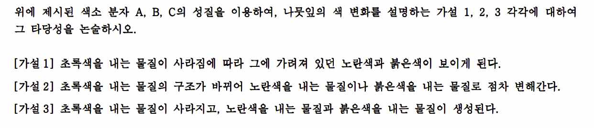

문제 3
가을에 어떤 나뭇잎에서는 초록색이 사라지고 노란색과 붉은색이 나타나는데, 이는 나뭇잎에 존재하는 색소 분자 때문이다. 색소 분자는 아래 그림과 같이 이중결합과 단일결합이 번갈아 나타나는 구조를 가지며, 보라색(400 nm)과 빨간색(700 nm) 사이에 있는 특정 파장대의 빛을 흡수한다. 색소 분자 A, B, C의 흡수 스펙트럼은 그림과 같다.


색소 분자 A, B, C의 성질은 다음과 같다.
- 색소 분자 A가 흡수한 빛은 광합성 과정에 필요한 에너지로 사용된다. 이 물질은 빛이 풍부하고 따뜻한 조건에서 쉽게 생성되지만, 가을이 되면 그 양이 감소한다.
- 색소 분자 B는 가을에 세포액의 당 농도가 높아지고 충분한 빛이 공급될 때 만들어진다. 날씨가 건조하면 세포액의 당 농도가 높아져 이 물질의 양이 증가한다.
- 색소 분자 C가 흡수한 빛의 에너지는 색소 분자 A에 전달되어 광합성에 이용된다. 이 물질은 A보다 오랫동안 유지된다.
위에 제시된 색소 분자 A, B, C의 성질을 이용하여, 나뭇잎의 색 변화를 설명하는 가설 1, 2, 3 각각에 대하여 그 타당성을 논술하시오.
[가설 1] 초록색을 내는 물질이 사라짐에 따라 그에 가려져 있던 노란색과 붉은색이 보이게 된다.
[가설 2] 초록색을 내는 물질의 구조가 바뀌어 노란색을 내는 물질이나 붉은색을 내는 물질로 점차 변해간다.
[가설 3] 초록색을 내는 물질이 사라지고, 노란색을 내는 물질과 붉은색을 내는 물질이 생성된다.